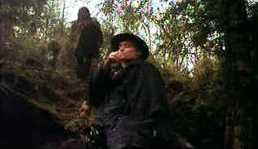

| Utu/
B+, D |
| Kino/1988/118/WS
1.77 |
Frontier New Zealand looks a little like John Ford Indian country is
this Down Under army versus the natives flick. Utu is a very good
film.
A Maori army scout, Te
Wheke, encounters
the stark evidence of a massacred Maori village. The devastating scene
is more than he can stand. His rebellion sets in motion an action to
bring an end to the violence against the British establishment. The
crown brings in Lieutenant Scott, a native New Zealander, to attempt to
use quasi-guerilla tactics to quell the uprising. The messages in the
compelling film are clear cut, almost pedantic, yet I never felt
hammered by preaching. Director Geoff Murphy directs with taut control
maintaining tension yet keeping the film level-headed. He even delivers
a fair dose of humor..
 |
| Te
Wheke spots Scott. ©Kino |
The relationships are especially interesting as they reflect on the
film's philosophy. Scott represents a native New Zealander's view while
the martinet Colonel Elliot is a cartoon of British imperialism. Wiremu,
the savvy Maori militiaman who remains loyal to the crown is probably
the most interesting character of all since he embodies aspects of all philosophies.
The sub-plot of settler Williamson's determination to wreak vengeance on Te
Wheke after the Maori band attacks his homestead makes for fascinating
film.
Watching Williamson put the pieces together to hunt the Maori warrior
provides some stirring moments. You gotta get a load of that two fisted gun he fashions.
A truly memorable screen weapon!
The
fighting is quite direct and unfettered by love of the camera. There are
some interesting performances. Zac Wallace, making his screen debut, is
haunting as Te Wheke, the white man’s soldier turned back to raging
savagery. Kelly Johnson, who has a pivotal role as Lieutenant Scott, is
far too white bread for my taste. Still, the character lives under
Murphy’s guidance. The portrayal of the British Colonel is rather
cardboard and comical as well. Bruno Lawrence is wonderfully mad as
rancher Williamson, foaming at the mouth for Te Wheke’s blood. Tania Bristowe as Kura, the rebellious and independent native girl, is freshly
playful without artifice.
Sad to say that this
powerful film is turned out in a miserable transfer.
It actually looks like it might have been
sourced from ¾ inch tape. I know it’s a low budget job coming from a
young New Zealand director, but I had the feeling that it should look
absolutely stunning. Contrast often falls short, color saturation is
barely adequate, and blacks are less than hardy. Soft focus prevents
entering the deeper reaches of characters. Haunting music lacks full
range. Hey, if this is all there's gonna be on DVD, you might as well do
a rental, if you can find it.
|
|
|
|

Selections from the Feature
Archive include articles on
Akira Kurosawa, Frank
Darabont, Blonde
Bimbos, Hollywood
Street Gangs, or Vietnam:
The Hollywood Pariah, and many more....

Hail, Hail, the Gangs in Hollywood
From Angels with Dirty
Faces to West Side Story to Menace II Society, Hollywood has depicted
youth gangs as reflections of the times.


Glenn Erickson's insightful DVD reviews have been a Internet fixture for
several years. Check out some of his sophisticated feature articles.
Currently hosted by DVD Talk.

ISF Monitor
Calibrations in the Tristate New York area. Lots of hardware info
and frequent hardware peaks from video expert Kevin Miller. They may be
judgmental, but that's the point, isn't it. Lots of DVD reviews plus
news and more.

MRQE
Find reams of movie and DVD
reviews at the Movie Review Query Engine, a index of reviews appearing
on the Internet.

Mystery writer Fred Hunter digs into classic
films on DVD. Check out his insightful reviews at The
Classics on DVD.

Michael Douglas in Falling Down, looks quizzically at Robert Duval: 'You mean,
I'm the bad guy'
|